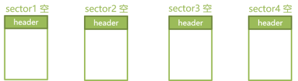
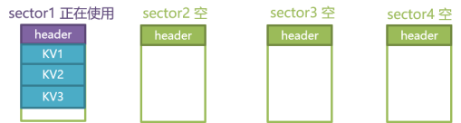
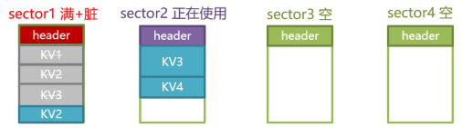
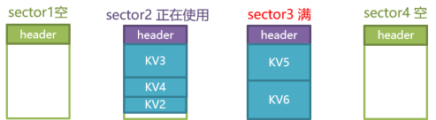

16. Easyflash4 boot times¶
16.1. Overview¶
This example mainly introduces Easyflash4 start reading and writing test related
16.2. Algorithm implementation¶
16.2.1. 1. First use¶
Assuming that there are 4 sectors in the ENV partition, the following will explain the corresponding Flash status and data changes under different operations according to the way of operating ENV.
When it is used for the first time, EasyFlash will check the header of each sector. If it does not meet the specified format, it will perform all formatting operations. After formatting, the top of each sector will be stored in the header, which is responsible for recording the status of the current sector. Magic number and other information. The initial state of formatting is empty.
16.2.2. 2. Add KV1, KV2, KV3¶

Before performing the adding operation, the appropriate address will be retrieved to store the new KV to be added. The retrieval strategy here is mainly:
Make sure that the remaining capacity of the currently selected sector is sufficient
Preferably select the sector in use state, and finally use the empty state sector
Check whether there is a KV with the same name in the new KV. If there is, an additional action to delete the old value is required
As can be seen from the above figure, KV1, KV2 and KV3 have been placed in sector1, and after adding, the sector status has also been modified to be in use.
16.2.3. 3. Modify KV2 KV3, delete KV1, add KV4¶

When the ENV is modified, the old ENV will be deleted, and the state of the sector will also be modified to a dirty state, and then perform the operation of adding ENV.
When modifying KV2, the old value of the existing KV2 is modified to be deleted, and the state of sector1 is modified to the dirty state. After that, the new value of KV2 is put into sector1. It is found that sector1 has no space, and the state of sector1 will also be modified Full state
When modifying KV3, the old value of KV3 that already exists is modified to be deleted, and the state of sector1 is already dirty, and no further modification is required. After searching, it is found that the new value of KV3 can only be placed in sector2, and after placing it in sector2, modify it to be in use;
When deleting KV1, find the location of KV1 and modify it to the deleted state. The state of sector1 is already in the dirty state, so there is no need to modify it;
When adding KV4, after searching and finding a suitable storage location in sector2, after adding it, the status of sector2 is already in use and no further modification is required.
16.2.4. 4. Add KV5 KV6, trigger GC (Garbage Clear)¶

Perform the operation of adding KV5. Because KV5 is large and cannot fit in sector2, it can only be placed on a new sector, sector3. After adding, modify the status of sector3 to be in use;
Perform the operation of adding KV6, KV6 can only be placed under sector3. After placing it in sector 3, it is found that the space of sector3 is full, so modify it to the full state. After the execution is completed, it is found that there is only one empty sector in the 4 sectors of the entire ENV. If this sector continues to be used, the GC operation cannot be performed anymore, so the GC request is triggered at this time;
Execute the GC request, EasyFlash will find all sectors marked as full and dirty, and move the ENV inside them to other locations. In this way, the KV2 on sector1 was moved to sector2. After sector1 was vacated, the format operation was performed on it again, so that there was another empty sector in the entire ENV partition.
16.3. Boot times test¶
16.3.1. 1. Test process and effect¶
The test process is: easyflash initialization → read boottimes → boottimes++ → write boottimes, reset and restart 800 times.
easyflash initialization
uint32_t timer_us;
timer_us = bl_timer_now_us();
easyflash_init();
timer_us = bl_timer_now_us() - timer_us;
printf("easyflash init time us %ld\r\n", timer_us);
Read and write boottimes
static void __easyflash_boottimes_dump()
{
char *times = NULL;
uint32_t times_num = 0;
char env_set[12] = {0};
uint32_t timer_us;
timer_us = bl_timer_now_us();
times = ef_get_env(EASYFLASH_BOOT_TIMES);
timer_us = bl_timer_now_us() - timer_us;
printf("easyflash read boot_times us %ld\r\n", timer_us);
if (times == NULL) {
__easyflash_first_boottimes();
return;
}
times_num = atoi(times);
sprintf(env_set, "%ld", ++times_num);
timer_us = bl_timer_now_us();
ef_set_env(EASYFLASH_BOOT_TIMES, env_set);
ef_save_env();
timer_us = bl_timer_now_us() - timer_us;
printf("easyflash write boot_times us %ld\r\n", timer_us);
printf("The system now boot times %ld\r\n", times_num);
}
The test results are as follows:
{kind=link}
Abscissa: boot times (unit: times)
Ordinate: time (unit: us)
Red line: easyflash initialization time-consuming
Green line: easyflash write time
Yellow line: time-consuming to read easyflash
16.3.2. 2. Test Analysis¶
The easyflash_init process includes read and other operations, so the initialization time is related to the read time. The first spike phenomenon in the figure shows that easyflash is checking and formatting sectors at this time. For details, see: First use .
Analysis of reading process: Since easyflash4 writes a kv every time (for the detailed process of writing KV, see: add KV ), a kv will be added after the old_kv address, and old_kv will be marked as "delete", so every time kv is read, it needs to be traversed. kv, the more write times, the longer the read time.
Analysis of the writing process: read to find kv before writing (see: Modify KV for the detailed process of modifying KV ), this test write after read, easyflash will update to cache after each read, so the write time is not linear with read relationship.
As can be seen in the figure, when the boottimes are about 688 times, the read and write operation time is "initialized", and the write time has a spike. At this time, the GC is triggered (for details on the triggering GC process, see: Triggering GC ), indicating that the flash size is already fast Only one free sector is left after the operation is exhausted.